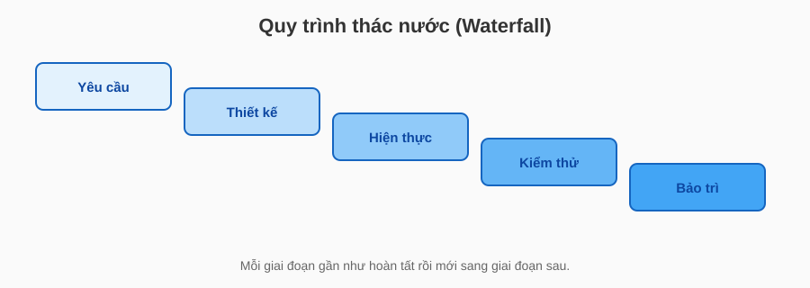
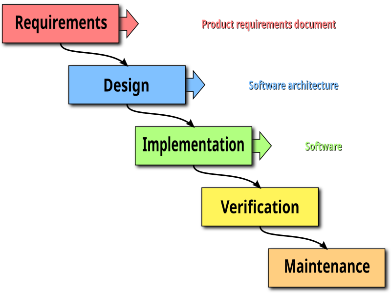
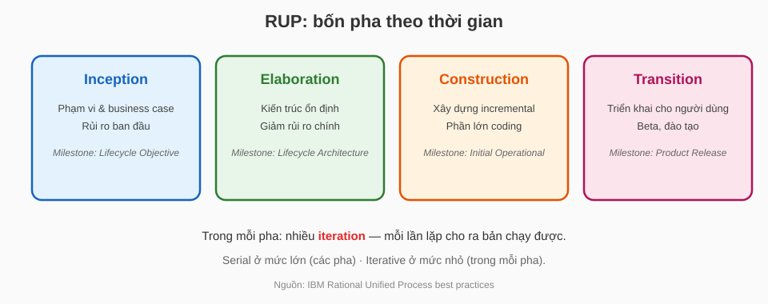
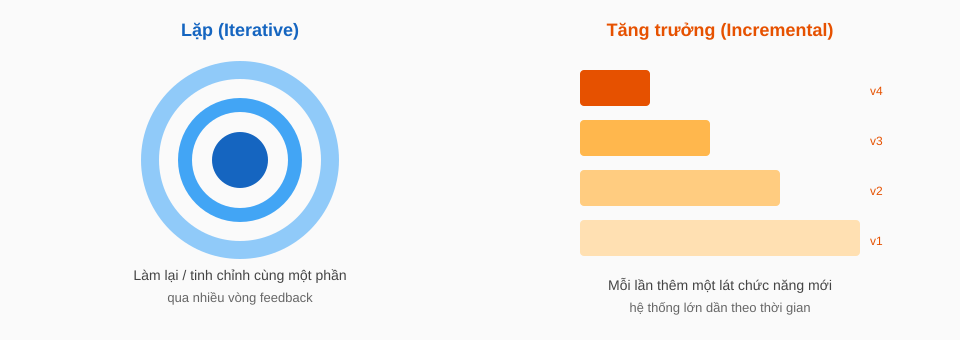
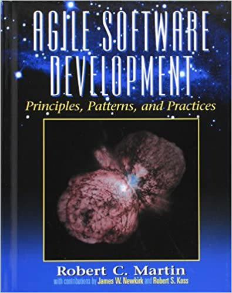
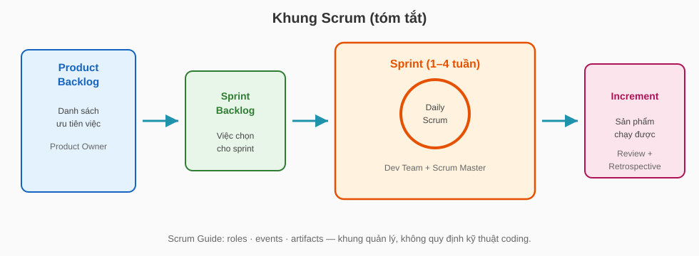
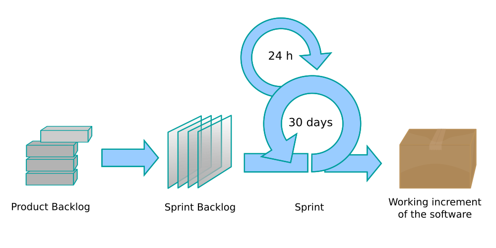
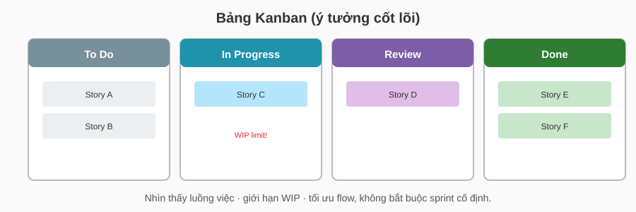
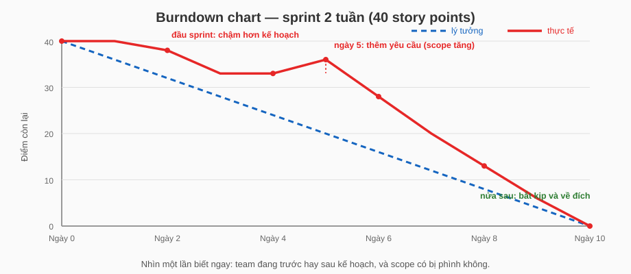
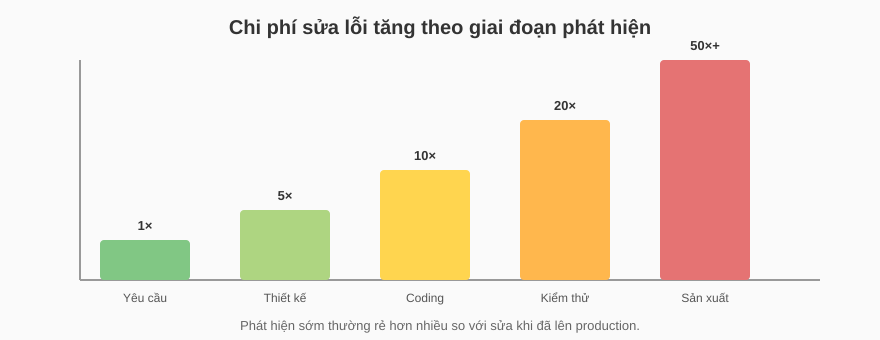

Kỹ nghệ hệ thống Trí tuệ nhân tạo
Bài 4a: RUP và Agile
Trường ĐH Công nghệ – Đại học Quốc gia Hà Nội
Nội dung
- Vì sao cần quy trình phát triển?
- Waterfall và các phương pháp kế thừa
- RUP: lặp và tăng trưởng
- Agile / Scrum — công cụ Kanban & Burndown chart
- Agile / XP
- Chất lượng thiết kế trong Agile
Lộ trình bài học
0.
Vì sao cần
quy trình phát triển?
Câu hỏi mở đầu
Quy trình giúp làm gì?
- Chia việc lớn thành các bước có kiểm soát.
- Làm rõ ai làm gì, khi nào giao, khi nào dừng.
- Giảm rủi ro: phát hiện sai sớm hơn sửa muộn.
- Giữ nhịp giao sản phẩm chạy được.
Quy trình không thay thế kỹ năng kỹ thuật — nó định hướng cách team phối hợp.
Bản đồ các phương pháp sẽ gặp
- Waterfall / SDLC — tuần tự theo giai đoạn
- RUP — vòng lặp + tăng trưởng, có pha rõ
- MSF, ITIL — khung dự án Microsoft / vận hành dịch vụ IT
- RAD, Spiral, V-Model — các biến thể linh hoạt hơn thác nước
- Agile — giá trị linh hoạt
- Agile / Scrum · Kanban — tổ chức công việc
- Agile / XP — thực hành kỹ thuật (pair, TDD, CI…)
1.
Waterfall và
các phương pháp kế thừa
Waterfall là gì?
- Gắn với SDLC cổ điển: Requirements → Design → Implementation → Verification → Maintenance.
- Winston Royce (1970) mô tả mô hình tuần tự này — và cũng cảnh báo rủi ro nếu áp dụng cứng nhắc.
Nhìn thác nước theo giai đoạn

Mỗi giai đoạn gần như “khóa” trước khi sang bước sau — feedback muộn thường đắt.
Sơ đồ Waterfall cổ điển

Tài liệu / thiết kế / coding / kiểm thử xếp tầng xuống — Wikimedia Commons (CC BY 3.0, Peter Kemp / Paul Smith).
Từng giai đoạn làm gì?
| Giai đoạn | Đầu ra chính |
|---|---|
| Requirements | Tài liệu yêu cầu (SRS) đã “đóng” |
| Design | Kiến trúc, thiết kế chi tiết |
| Implementation | Mã nguồn theo thiết kế |
| Verification | Kiểm thử so với đặc tả |
| Maintenance | Sửa lỗi / nâng cấp sau khi phát hành |
Điểm mạnh và điểm yếu
- Dễ lập kế hoạch, báo cáo, ký hợp đồng theo milestone.
- Tài liệu sớm, rõ trách nhiệm từng pha.
- Hợp khi yêu cầu ít đổi.
- Feedback người dùng đến muộn.
- Đổi yêu cầu giữa chừng rất đắt.
- Rủi ro tích tụ đến cuối (integration / test).
Waterfall hợp khi nào?
- Yêu cầu ổn định, ít thay đổi giữa chừng.
- Ràng buộc pháp lý / hợp đồng đòi tài liệu đầy đủ sớm.
- Phạm vi và công nghệ đã quen.
Các mô hình khác (nhìn nhanh)
Boehm: xoắn ốc theo vòng rủi ro + nguyên mẫu.
Mỗi bước phát triển gắn với một bước kiểm thử tương ứng.
Hai mô hình này vẫn gần “có giai đoạn”, nhưng đã tăng kiểm soát rủi ro / kiểm thử.
RAD — tiếp cận linh hoạt hơn thác nước
- Phổ biến hoá bởi James Martin (những năm 1990) trên nền ý tưởng prototype / JAD.
- Mục tiêu: rút ngắn thời gian từ ý tưởng → sản phẩm dùng được.
- Là cầu nối tư duy giữa Waterfall cứng và Agile sau này.
RAD làm việc thế nào?
planning
Phạm vi & ưu tiên nghiệp vụ
Workshop + prototype với người dùng
Xây nhanh theo prototype đã chốt
Kiểm thử, đào tạo, đưa vào dùng
- Hợp khi: cần ra mắt nhanh, người dùng sẵn sàng tham gia, phạm vi vừa phải.
- Hạn chế: dễ “phình scope”; kém phù hợp hệ thống lớn, ràng buộc pháp lý nặng.
MSF — Microsoft Solutions Framework
- Process model: Envisioning → Planning → Developing → Stabilizing → Deploying.
- Team model: các vai trò (Product, Program, Development, Test, User Experience, Release…).
- Trong Planning: chốt functional specification + kế hoạch / lịch trình tổng.
Năm pha MSF — nhớ gì?
| Pha | Trọng tâm |
|---|---|
| Envisioning | Tầm nhìn / phạm vi, rủi ro ban đầu, cấu trúc team |
| Planning | Yêu cầu chi tiết, functional spec, kế hoạch & lịch trình |
| Developing | Xây dựng giải pháp theo vòng lặp |
| Stabilizing | Kiểm thử, sửa lỗi, sẵn sàng phát hành |
| Deploying | Đưa vào môi trường vận hành thực |
MSF nghiêng về dự án giải pháp — khác ITIL nghiêng về vận hành dịch vụ lâu dài.
ITIL — thư viện vận hành dịch vụ IT
- Quan tâm: sự cố (incident), thay đổi (change), cấu hình, mức dịch vụ (SLA)…
- Vòng đời dịch vụ (ITIL v3): Strategy → Design → Transition → Operation → Continual Improvement.
- Dùng khi hệ thống đã / sắp vận hành: giữ ổn định, đo chất lượng dịch vụ.
MSF và ITIL — đặt cạnh nhau
| MSF | ITIL | |
|---|---|---|
| Câu hỏi | Làm sao giao một giải pháp đúng hạn? | Làm sao vận hành dịch vụ ổn định? |
| Trọng tâm | Dự án: envision → deploy | Dịch vụ: SLA, incident, change |
| Trong AI | Đóng gói và triển khai model/app | Monitor, rollback, hỗ trợ sau deploy |
Trên lớp nhớ: MSF = dự án; ITIL = vận hành dịch vụ; RAD = prototype nhanh, phản hồi sớm.
2.
RUP:
lặp và tăng trưởng
RUP là gì?
- Xuất phát từ Rational Software; sau này thuộc IBM.
- Nhấn mạnh use case, kiến trúc, và giảm rủi ro theo vòng lặp.
Bốn pha của RUP

Mỗi pha kết thúc bằng milestone
| Pha | Câu hỏi chốt |
|---|---|
| Inception | Có đáng làm không? Phạm vi đủ rõ chưa? |
| Elaboration | Kiến trúc đã ổn? Rủi ro chính đã giảm? |
| Construction | Đã có bản chạy đủ dùng để chuẩn bị phát hành? |
| Transition | Người dùng nhận và dùng được chưa? |
Vòng lặp khác tăng trưởng thế nào?

RUP dùng cả hai: mỗi vòng lặp tinh chỉnh, đồng thời thêm chức năng mới (tăng trưởng).
Vòng lặp (iteration) trong RUP
- Một vòng đủ: chọn yêu cầu → thiết kế → code → kiểm thử → tích hợp.
- Kết thúc bằng bản chạy được (internal hoặc external).
- Ưu tiên xử lý rủi ro cao trước.
Khác Waterfall: không chờ “xong hết yêu cầu” mới code.
Vai trò trong RUP (ý tưởng)
- Giữ kiến trúc ổn định
- Chặn rủi ro kỹ thuật lớn
- Hiện thực theo use case
- Giao bản tăng trưởng (increment) mỗi vòng lặp
RUP có nhiều role; trên lớp chỉ cần thấy: kiến trúc và hiện thực tách trách nhiệm rõ.
3.
Agile / Scrum
Khung quản lý công việc trong Agile
Agile theo Robert C. Martin

— Robert C. Martin, Agile Software Development
Agile ra đời thế nào?
Các phương pháp "gọn nhẹ" xuất hiện để phản ứng lại quy trình nặng nề: Scrum, XP, Crystal, Adaptive Software Development…
17 người (Kent Beck, Martin Fowler, Robert Martin, Ken Schwaber, Jeff Sutherland…) họp tại Snowbird, Utah.
Chốt tên chung "Agile" cùng 4 giá trị và 12 nguyên tắc — nền của Scrum, Kanban, XP ngày nay.
Agile không phải một phát minh đơn lẻ — nó là điểm hội tụ của nhiều phương pháp gọn nhẹ.
Bốn giá trị Agile Manifesto (2001)
- Cá nhân và sự tương tác hơn là quy trình và công cụ
(Individuals and interactions over processes and tools) - Phần mềm chạy được hơn là tài liệu đầy đủ
(Working software over comprehensive documentation) - Cộng tác với khách hàng hơn là đàm phán hợp đồng
(Customer collaboration over contract negotiation) - Phản hồi với thay đổi hơn là bám theo kế hoạch
(Responding to change over following a plan)
Vế phải vẫn có giá trị — nhưng khi phải chọn, ưu tiên vế trái.
12 nguyên tắc Agile
- Ưu tiên cao nhất: làm khách hàng hài lòng bằng cách giao phần mềm có giá trị, sớm và liên tục.
- Chào đón thay đổi yêu cầu, kể cả khi đã muộn — thay đổi là lợi thế cạnh tranh cho khách hàng.
- Giao phần mềm chạy được thường xuyên, chu kỳ vài tuần đến vài tháng — càng ngắn càng tốt.
- Người kinh doanh và developer làm việc cùng nhau hằng ngày trong suốt dự án.
- Xây dự án quanh những cá nhân có động lực; cho họ môi trường, hỗ trợ, và niềm tin.
- Trò chuyện trực tiếp là cách truyền đạt hiệu quả nhất trong team.
- Phần mềm chạy được là thước đo tiến độ chính.
- Giữ nhịp phát triển bền vững — mọi người duy trì được tốc độ đều vô hạn định.
- Liên tục chú ý tới chất lượng kỹ thuật và thiết kế tốt làm tăng tính linh hoạt.
- Đơn giản — nghệ thuật tối đa hoá lượng việc không phải làm — là thiết yếu.
- Kiến trúc, yêu cầu, thiết kế tốt nhất nảy sinh từ team tự tổ chức.
- Định kỳ, team nhìn lại cách làm việc và điều chỉnh cho hiệu quả hơn.
Dịch thoát ý từ agilemanifesto.org/principles — Scrum và XP đều là cách hiện thực các nguyên tắc này.
Agile là gì — và không phải gì?
- Tập giá trị và nguyên tắc
- Ưu tiên feedback sớm
- Chấp nhận yêu cầu đổi
- Một tool cụ thể
- “Không cần tài liệu”
- Làm tùy hứng không kế hoạch
Scrum nằm đâu trong Agile?
- Nhịp cố định (thường 1–4 tuần).
- Mỗi sprint kết thúc bằng Increment chạy được.
- Ba trụ: transparency · inspection · adaptation (Scrum Guide).
Khung Scrum (tóm tắt)

Sơ đồ quy trình Scrum

Product Backlog → Sprint → Daily Scrum → Increment — Wikimedia Commons (Lakeworks, dựa trên Open Clip Art).
Ba thành phần cốt lõi của Scrum
- Product Owner
- Scrum Master
- Developers
- Sprint
- Daily Scrum
- Review / Retro
- Product Backlog
- Sprint Backlog
- Increment
Scrum Guide: khung quản lý công việc — không quy định kỹ thuật coding.
Hai công cụ trực quan trong Scrum
Sprint chạy tốt khi cả team nhìn thấy công việc và tiến độ:
Việc nào đang ở đâu? Ai đang làm gì? Chỗ nào tắc?
Còn bao nhiêu việc? Có kịp hết sprint không?
Kanban trả lời "trạng thái", burndown trả lời "tiến độ" — dùng cùng nhau trong sprint.
Công cụ 1: bảng Kanban

Ví dụ: bảng Kanban trong một sprint
Tình huống: team 5 người làm app đặt đồ ăn, sprint 2 tuần, bảng trên Jira / Trello.
- Sáng thứ Ba, cột In Progress đã chạm WIP limit (3 thẻ) — không ai được kéo thẻ mới vào.
- Daily Scrum nhìn bảng thấy thẻ "Tích hợp cổng thanh toán" đứng yên 3 ngày → cả team xúm vào gỡ thay vì nhận việc mới.
- Cuối sprint, cột Done chính là danh sách demo cho Sprint Review.
Công cụ 2: Burndown chart

Trục dọc: điểm (story points) còn lại · trục ngang: ngày trong sprint.
Ví dụ: đọc burndown chart
Cùng sprint trên — nhìn đường thực tế (đỏ) so với đường lý tưởng (xanh):
- Ngày 1–4: đường đỏ nằm trên đường xanh → cháy chậm hơn kế hoạch; Scrum Master hỏi ngay tại daily thay vì đợi cuối sprint.
- Ngày 5: đường đỏ nhảy lên → khách thêm yêu cầu giữa sprint (scope tăng); Product Owner phải đánh đổi — bỏ bớt story khác ra.
- Ngày 6–10: dốc xuống đều và về 0 → team bắt kịp, sprint về đích.
Kanban cũng có thể đứng riêng
| Trong Scrum (công cụ) | Kanban độc lập (phương pháp) | |
|---|---|---|
| Nhịp | Theo sprint cố định | Luồng liên tục, không sprint |
| Giới hạn | Phạm vi sprint + WIP limit | Chỉ WIP limit |
| Hợp khi | Phát triển sản phẩm theo nhịp | Việc đến liên tục: vận hành, hỗ trợ |
4.
Agile / XP
Extreme Programming — thực hành kỹ thuật trong Agile
XP là gì trong Agile?
- Kent Beck phát triển vào cuối những năm 1990.
- XP có trước Agile Manifesto (2001) — và góp phần định hình Agile.
- Khác Scrum: XP nói rõ cách viết và kiểm thử code.
XP theo Kent Beck
— Kent Beck, Extreme Programming Explained
Năm giá trị của XP
Bốn giá trị đầu trong ấn bản 1999; Respect thêm ở ấn bản 2004.
XP: lập kế hoạch và feedback nhiều tầng
Vòng feedback theo năm / quý / tuần / ngày / giờ — Wikimedia Commons (dựa trên sơ đồ của Don Wells, CC BY-SA 3.0).
Một số thực hành XP

Thực hành then chốt — hiểu nhanh
| Thực hành | Ý chính |
|---|---|
| Pair Programming | Hai người một máy — review liên tục, chia sẻ kiến thức |
| TDD | Viết test trước → code vừa đủ → refactor |
| Continuous Integration | Tích hợp thường xuyên, tránh “big bang” cuối kỳ |
| Refactoring | Cải thiện thiết kế liên tục mà không đổi hành vi |
| Simple Design | Chỉ đủ cho nhu cầu hiện tại — tránh over-engineering |
| Small Releases | Phát hành nhỏ, sớm, thường xuyên để nhận feedback |
Tình huống thực tế: thanh toán QR
- Yêu cầu chưa chốt hẳn → Waterfall (đóng băng đặc tả rồi mới code) rất rủi ro.
- Đây là tình huống XP phát huy: đón thay đổi bằng kỷ luật kỹ thuật.
Một vòng lặp XP (1 tuần) trong tình huống này
Khách chọn story ưu tiên: "Người mua quét QR và thấy xác nhận trong 5 giây". Team ước lượng, cam kết cho tuần này.
Hai người một máy: viết test "QR hết hạn sau 15 phút" trước, rồi code vừa đủ cho test xanh, rồi refactor.
Toàn bộ test chạy tự động. Thứ Tư ngân hàng đổi format API — test tích hợp đỏ ngay trong 10 phút, sửa trong ngày.
Phát hành cho 5% người dùng. Feedback: nút quét khó thấy → thành story cho vòng lặp tuần sau.
API đổi giữa chừng không phá dự án: test bắt lỗi sớm, thiết kế đơn giản nên sửa nhanh.
Scrum quản lý — XP kỹ thuật
- Ai làm gì trong sprint?
- Khi nào review / retro?
- Backlog ưu tiên ra sao?
- Pair, TDD, CI, refactor
- Làm sao để code vẫn đổi được?
- Feedback kỹ thuật theo giờ / ngày
Nhiều team thực tế: Scrum + một phần thực hành XP.
Chi phí sửa lỗi theo thời điểm phát hiện

XP đẩy kiểm thử và feedback sớm — giảm chi phí sửa muộn.
Khi nào XP đặc biệt hữu ích?
- Yêu cầu thay đổi nhanh, cần giữ chất lượng code.
- Team nhỏ–vừa, làm việc gần nhau (pair dễ hơn).
- Cần kỷ luật kỹ thuật rõ: test, CI, thiết kế đơn giản.
5.
Chất lượng thiết kế
trong Agile
Tính đơn giản
- Kent Beck: đầu tư thiết kế nhỏ nhất có thể trước khi nhận lợi nhuận từ nó.
- Robert Martin: phức tạp không cần thiết thường đến từ việc đoán trước thay đổi.
- Grady Booch: không làm chủ độ phức tạp → trễ, vượt ngân sách, thiếu yêu cầu.
Kiến trúc sư giỏi giảm phức tạp
Không trùng lặp (DRY)
- Mã dư thừa làm mỗi lần sửa lỗi phải sửa ở nhiều chỗ.
- Mỗi bản copy hơi khác → sửa không đồng nhất → bug quay lại.
Robert Martin: redundancy làm hệ thống khó thay đổi an toàn.
Giản lược tính năng (YAGNI)
- Xuất phát từ Extreme Programming (Ron Jeffries / cộng đồng XP).
- DRY tránh lặp lại những gì đã cần; YAGNI tránh làm những gì chưa cần.
- Đoán trước thay đổi → code phức tạp hơn, chậm hơn, khó bảo trì hơn.
YAGNI — ví dụ nhanh
- “Mai sau có thể đa ngôn ngữ” → nhét i18n khung sẵn dù mới hỗ trợ tiếng Việt.
- Plugin system cho 1 tính năng duy nhất hiện tại.
- Chỉ làm i18n khi có story/yêu cầu đa ngôn ngữ thật.
- Viết thẳng tính năng; tách plugin khi nhu cầu thứ hai xuất hiện.
YAGNI không cấm thiết kế tốt — cấm đầu tư cho giả thuyết chưa được xác nhận.
Tính mô-đun: cứng và bất động
Một thay đổi kéo theo chuỗi sửa ở nhiều module phụ thuộc.
Có phần đáng tái dùng, nhưng tách ra quá rủi ro / tốn công.
Hai mùi thiết kế Martin nhấn mạnh — nối trực tiếp với SOLID ở bài trước.
Tổng kết
Nhớ gì sau bài 4a?
- Waterfall: rõ giai đoạn, yếu khi yêu cầu đổi nhiều.
- RAD: prototype nhanh, phản hồi sớm — cầu nối tới Agile.
- MSF: khung dự án Microsoft (envision → deploy); ITIL: vận hành dịch vụ.
- RUP: bốn pha + vòng lặp; giảm rủi ro sớm.
- Agile / Scrum: khung quản lý sprint, backlog, increment — theo dõi bằng Kanban và burndown.
- Agile / XP: thực hành kỹ thuật (TDD, pair, CI…) để đổi code an toàn.
Khi nào dùng gì?
| Tình huống | Gợi ý |
|---|---|
| Yêu cầu ổn, hợp đồng cứng | Waterfall / V-Model (có kiểm soát) |
| Cần ra mắt nhanh, user sẵn sàng tham gia | RAD (prototype ngắn) |
| Dự án lớn / giải pháp Microsoft-style | MSF hoặc RUP (Elaboration / Planning mạnh) |
| Sản phẩm đổi nhanh, team nhỏ–vừa | Scrum + thực hành XP |
| Vận hành dịch vụ / SLA sau deploy | ITIL (+ Kanban cho luồng hỗ trợ) |
Tài liệu tham khảo
- Per Kroll et al. — A Practitioner's Guide to the RUP
- Robert C. Martin — Agile Software Development: Principles, Patterns, and Practices
- Kent Beck — Extreme Programming Explained
- Robert C. Martin — Clean Architecture
- Steve McConnell — Code Complete
- Frederick Brooks — The Mythical Man-Month
- Agile Manifesto — agilemanifesto.org
- Scrum Guide — scrumguides.org